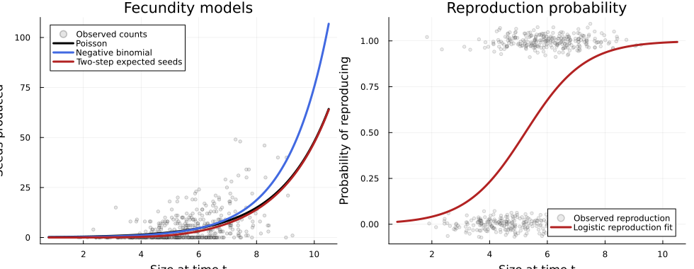

Overview
Fecundity is often the noisiest part of a structured population analysis. Counts can be zero-inflated, strongly overdispersed, or naturally split into two biological components: the probability of reproducing and the number of offspring produced conditional on reproduction.
This vignette shows three common workflows with VitalRateModels.jl:
- Poisson fecundity with a log link,
- negative-binomial fecundity for overdispersed counts, and
- a two-step model using
repro_formula.
Setup
using VitalRateModels, DataFrames, StatsModels, Distributions, Plots
using Random
using Statistics
using GLM
Random.seed!(2028)Random.TaskLocalRNG()Simulating overdispersed fecundity data
We simulate a perennial herb where larger individuals are more likely to flower and also produce more seeds once reproductive. Extra-Poisson variation is generated with a gamma-Poisson mixture.
n = 500
size_t = clamp.(rand(Normal(5.5, 1.3), n), 0.8, 10.5)
repro_prob = @. 1 / (1 + exp(-(-5.0 + 0.95 * size_t)))
reproduced = rand.(Bernoulli.(repro_prob)) .== 1
mean_seeds = @. exp(0.4 + 0.28 * size_t)
overdispersion = rand(Gamma(2.0, 0.5), n)
latent_mean = mean_seeds .* overdispersion
fecundity = [reproduced[i] ? rand(Poisson(latent_mean[i])) : 0 for i in eachindex(size_t)]
data = DataFrame(
size_t = size_t,
reproduced = reproduced,
fecundity = fecundity,
)
println("Fraction reproducing = ", round(mean(data.reproduced), digits=3))
println("Mean fecundity = ", round(mean(data.fecundity), digits=2))
println("Variance fecundity = ", round(var(data.fecundity), digits=2))Fraction reproducing = 0.534
Mean fecundity = 4.54
Variance fecundity = 55.2Because the variance is much larger than the mean, a simple Poisson model is likely to be too restrictive.
Poisson fecundity model
fec_poisson = fit_vital_rate(
FecundityModel,
data,
@formula(fecundity ~ size_t),
distribution=Poisson_(),
)
println("Poisson AIC = ", round(fec_poisson.aic, digits=2))Poisson AIC = 4181.97Negative-binomial fecundity model
A negative-binomial model relaxes the equal-mean-equal-variance assumption of the Poisson. In plant demography this is often more appropriate for seed production, fruit counts, or inflorescence numbers.
fec_negbin = fit_vital_rate(
FecundityModel,
data,
@formula(fecundity ~ size_t),
distribution=NegativeBinomial_(),
)
println("Negative-binomial AIC = ", round(fec_negbin.aic, digits=2))Negative-binomial AIC = 2234.34Two-step fecundity model
Many life histories are better represented as:
\[E[F(z)] = P(\text{reproducing} \mid z) \times E[\text{seeds} \mid z, \text{reproducing}].\]
The repro_formula argument lets us estimate the reproduction probability separately from the seed-count model.
fec_two_step = fit_vital_rate(
FecundityModel,
data,
@formula(fecundity ~ size_t),
distribution=Poisson_(),
repro_formula=@formula(reproduced ~ size_t),
)
println("Two-step count-model AIC = ", round(fec_two_step.aic, digits=2))
println("Separate reproduction model fitted? ", fec_two_step.prob_repro !== nothing)Two-step count-model AIC = 4181.97
Separate reproduction model fitted? truePredictions across size
size_domain = collect(range(0.8, 10.5; length=200))
newdata = DataFrame(size_t=size_domain)
poisson_hat = predict_vital_rate(fec_poisson, size_domain)
negbin_hat = predict_vital_rate(fec_negbin, size_domain)
count_hat = predict_vital_rate(fec_two_step, size_domain)
repro_hat = GLM.predict(fec_two_step.prob_repro, newdata)
two_step_hat = repro_hat .* count_hat200-element Vector{Float64}:
0.0029610434879996125
0.0031921405714831303
0.003441168195881869
0.0037095039294578126
0.003998629421657039
0.004310138042098046
0.0046457430515124245
0.0050072863380117875
0.0053967477536732
0.005816255088067509
⋮
50.72176356044804
52.20649865074369
53.733700146384486
55.30459953686872
56.92046379920049
58.58259641895636
60.29233844110122
62.05106955139552
63.86020918925902p1 = scatter(
data.size_t,
data.fecundity,
alpha=0.22,
ms=2.5,
color=:gray55,
label="Observed counts",
xlabel="Size at time t",
ylabel="Seeds produced",
title="Fecundity models",
)
plot!(p1, size_domain, poisson_hat, linewidth=3, color=:black, label="Poisson")
plot!(p1, size_domain, negbin_hat, linewidth=3, color=:royalblue, label="Negative binomial")
plot!(p1, size_domain, two_step_hat, linewidth=3, color=:firebrick, label="Two-step expected seeds")
p2 = scatter(
data.size_t,
Float64.(data.reproduced) .+ rand(Normal(0, 0.03), n),
alpha=0.18,
ms=2.5,
color=:gray55,
label="Observed reproduction",
xlabel="Size at time t",
ylabel="Probability of reproducing",
title="Reproduction probability",
)
plot!(p2, size_domain, repro_hat, linewidth=3, color=:firebrick, label="Logistic reproduction fit")
p = plot(p1, p2, layout=(1, 2), size=(980, 380))
p
Comparing fits
A quick empirical check is whether the fitted mean-variance relationship is sensible. The negative-binomial or two-step specification usually better captures the combination of many zeros and occasional very large counts.
comparison = DataFrame(
model = ["Poisson", "Negative binomial", "Two-step count component"],
AIC = round.([fec_poisson.aic, fec_negbin.aic, fec_two_step.aic], digits=2),
)
comparison| Row | model | AIC |
|---|---|---|
| String | Float64 | |
| 1 | Poisson | 4181.97 |
| 2 | Negative binomial | 2234.34 |
| 3 | Two-step count component | 4181.97 |
Summary
In this vignette we:
- fit a Poisson fecundity model,
- fit an overdispersed negative-binomial alternative,
- separated reproduction probability from seed production with
repro_formula, and - compared predicted fecundity curves across size.
For many structured population analyses, the two-step formulation is the most biologically interpretable because it distinguishes flowering from seed output conditional on flowering.
References
- Caswell, H. (2001). Matrix Population Models. Sinauer.
- Ellner, S. P., Childs, D. Z., & Rees, M. (2016). Data-Driven Modelling of Structured Populations. Springer.
- Rees, M., Childs, D. Z., & Ellner, S. P. (2014). Building integral projection models: a user's guide. Journal of Animal Ecology, 83, 528-545.